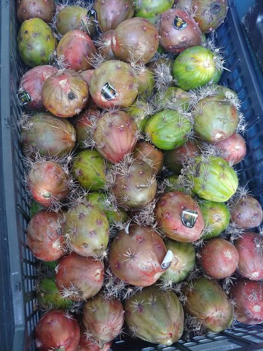

Pitaya
La Pitaya O Fruta Del Dragon Como Otras Frutas Mas Proviene De Mexico.Es De Temporada.Tambien Puedes Hacer La Pitaya En Un Jugo.
Sabias Que La Pitaya Es Muy Rica En Vitamina C Y Ademas Tambien Contiene Vitaminas Del Grupo B.
Esta Es Una Foto De Nuestras Pitaya

La Pitaya De Harriba Tambien Se Puede Hacer En Jugo
La Foto De La Pitaya Que Acabas De Ver No La Tenemos.la Razon Es Que Existen Tipos De Pitayas.
Pero La De Hasta Harriba Es Nuestra Pitaya Y Si Tenemos Esa.
Si Te Gustaria Saber Mas Informacion Sobre La Pitaya Aqui Abajo Te Dejo Unos Sitios Web.